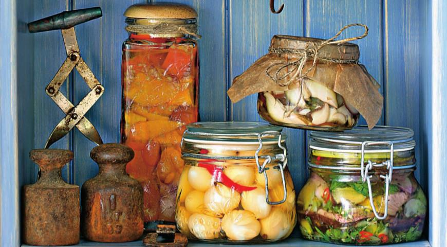

Консервированные овощи, фрукты, грибы и ягоды являются излюбленным лакомством и детей, и взрослых. В данной книге собрано множество разнообразных рецептов, которые пригодятся не только тем, кто осваивает азы консервирования, но и опытным хозяйкам.
Из этого издания вы сможете узнать о способах тепловой обработки плодов и ягод, получите советы по выбору тары, а также научитесь хранить свежие овощи, фрукты и ягоды, сушить и замораживать их.